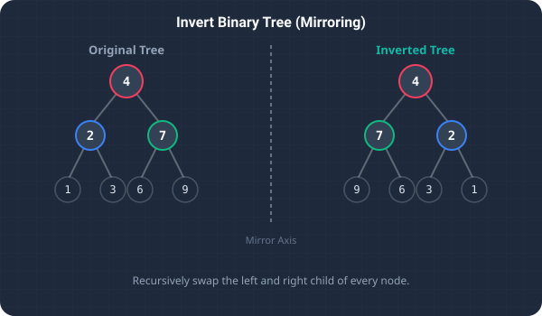

In binary tree algorithms, modifying structural links is a core skill tested during technical interviews. A classic and highly famous problem in this domain is LeetCode's Invert Binary Tree (often referred to as mirroring a binary tree).
The goal is to take the root of a binary tree and invert it so that, for every node in the tree, its left and right subtrees are swapped.
For example, if the input tree is:
4
/ \
2 7
/ \ / \
1 3 6 9
The inverted output tree must look like:
4
/ \
7 2
/ \ / \
9 6 3 1
By recursively visiting nodes and exchanging their left and right pointers, we can mirror the entire tree structure in linear time. Let’s break down the recursive design in Java.

To visualize tree inversion, imagine a decorative baby mobile hanging from the ceiling. The mobile has a central branch that splits into a left side and a right side, each holding smaller branch divisions, down to individual hanging charms at the bottom.
If you grab the central main branch and spin it 180 degrees, every single left-hand sub-decoration swaps positions with its right-hand counterpart.
In code, this is exactly how we invert a binary tree:
- We start at the top root.
- We swap the two primary left and right sub-branches.
- We then move down to each sub-branch, swapping their individual left and right child decorations.
- We repeat this process all the way down until we reach the individual hanging charms (leaf nodes) that have no further branches.
Algorithmic Strategy: Recursive Post-Order Traversal
A binary tree is a recursive data structure, meaning each node is itself the root of a smaller binary tree. This property allows us to write an elegant recursive solution:
- Base Case: If the current node is
null, there is nothing to invert, so we returnnull. - Recursive Division: We recursively call our inversion function on the left subtree and the right subtree:
TreeNode left = invertTree(root.left);TreeNode right = invertTree(root.right);
- Pointer Swapping: We exchange the pointers on the current node:
root.left = right;root.right = left;
- Return Root: Finally, we return the current node.
Step-by-Step Scenario Walkthrough
Let's trace this logic with a simple tree: 4 at the root, with left child 2 and right child 7:
- We invoke
invertTree(4). - Left Branch: We call
invertTree(2). Since node2has no children, its recursive calls returnnull. Swappingnullvalues does nothing, and node2returns itself. - Right Branch: We call
invertTree(7). Similarly, node7returns itself. - Root Swap: Back at root
4, we retrieve the inverted subtrees (left =2, right =7). We swap them:root.left = 7,root.right = 2. - The method completes, returning the mirrored root
4.
Key Code Explanations
Here is why the main logic in the solution is important:
if (root == null) return null;: The base case. An empty tree or empty child pointer has nothing to invert, so we return null.TreeNode left = invertTree(root.left); TreeNode right = invertTree(root.right);: Recursively solves the sub-problems, ensuring that we mirror all lower subtrees before linking them back.root.left = right; root.right = left;: The pointer swapping step, placing the mirrored right subtree in the left branch and vice versa.
Java Implementation Code
Below is the complete, self-contained Java source code that solves this problem. It also includes a main method that traces the execution with console outputs.
package io.practise.dsa;
public class InvertBinaryTree {
public static class TreeNode {
public int val;
public TreeNode left, right;
public TreeNode(int val) { this.val = val; }
}
// Optimized - Recursive - O(n)
public TreeNode invertTree(TreeNode root) {
if (root == null) return null;
TreeNode left = invertTree(root.left);
TreeNode right = invertTree(root.right);
root.left = right;
root.right = left;
return root;
}
public static void main(String[] args) {
InvertBinaryTree solver = new InvertBinaryTree();
TreeNode root = new TreeNode(4);
root.left = new TreeNode(2);
root.right = new TreeNode(7);
System.out.println("--- Invert Binary Tree Demonstration ---");
System.out.println("Root left before invert: " + root.left.val);
solver.invertTree(root);
System.out.println("Root left after invert: " + root.left.val);
}
}Conclusion & Complexity Analysis
This recursive traversal runs in O(N) linear time complexity (since we visit all N nodes in the tree exactly once) and uses O(H) space complexity (where H is the tree height, corresponding to the maximum depth of the call stack). For a balanced tree, this represents O(log N) auxiliary space, making it highly efficient.